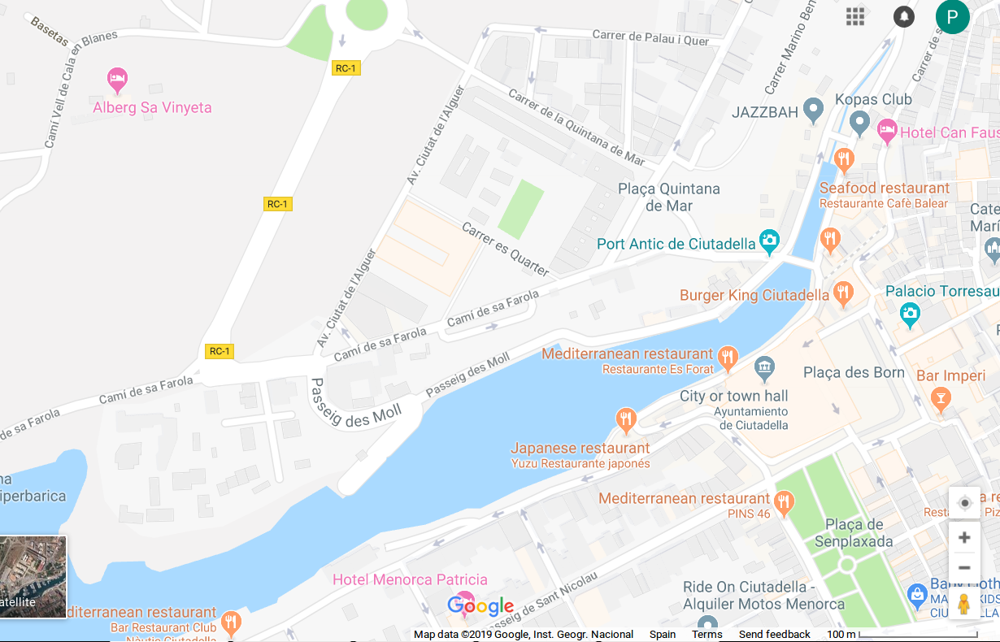

Trip to Menorca
Date 5-7/04
Planning
Ferry Alcudia Ciutadella, Ciutadella Alcudia - two way 11 euros with bike
Friday 05/04
Starting from Palma by car, taking bicicle along
06:30 Palma
07:30 Alcudia
Ferry Alcudia Ciutadella 08:00 Transmediterranea
Sa Vinyeta Alberg Juvenil

Camí de Cavalls
Sunday 07/04
20:15 Ferry Ciutadella Alcudia
22:00 Alcudia
Back to Palma by car
Ciutadella-Maó
Ciutadella - Camí Vell de Maó - 6 km - Camí Torretrencada / Toni Martí cap a Me1 - 20 km
Ferreries - Me1- 8 km - Mercadal - Me15- 5 km direcció Fornells - Me7 - 20 km - Maó
Mapa poblats talaiotics
Torretrencada (24) / Torrellafuda (23)